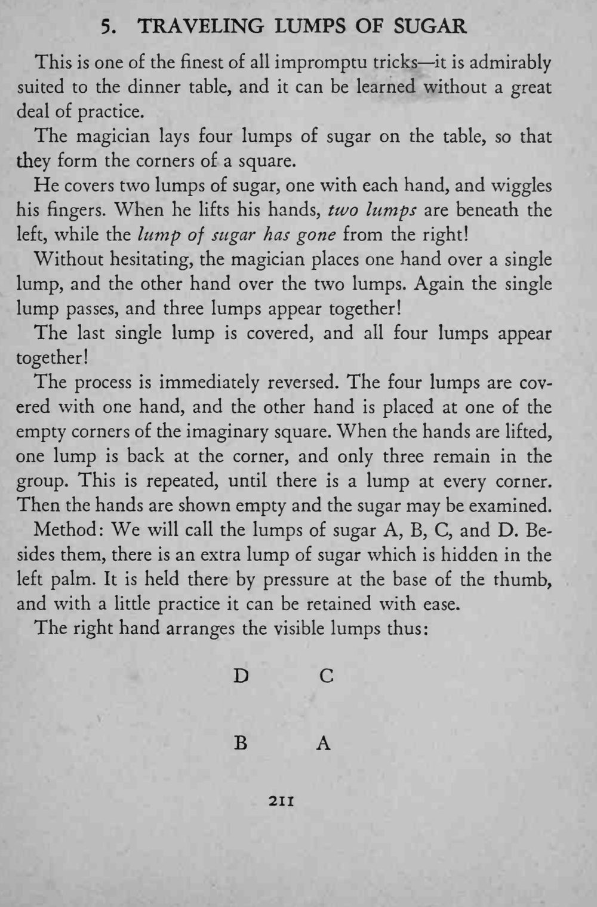
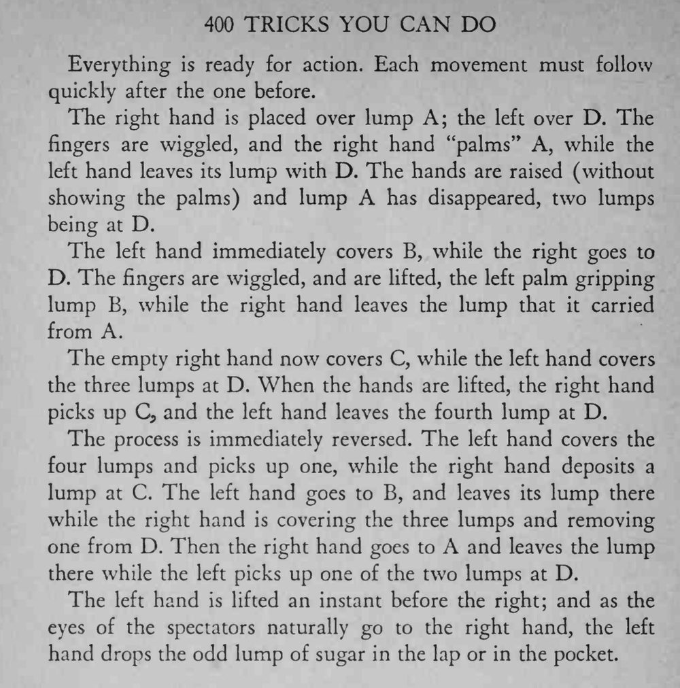

四块方糖摆成方形，盖上双手后，糖块一块接一块地从一处挪到另一处，最后聚成一堆，又一块块散回四角。
每个动作都要紧接着上一个，抬双手时不亮掌心，观众就看不出糖在掌中。


This is one of the finest of all impromptu tricks it is admirably suited to the dinner table, and it can be learned without a great deal of practice. The magician lays four lumps of sugar on the table, so that they form the corners of a square. He covers two lumps of sugar, one with each hand, and wiggles his ringers. When he lifts his hands, two lumps are beneath the left, while the lump of sugar has gone from the right! Without hesitating, the magician places one hand over a single lump, and the other hand over the two lumps. Again the single lump passes, and three lumps appear together! The last single lump is covered, and all four lumps appear together! The process is immediately reversed. The four lumps are covered with one hand, and the other hand is placed at one of the empty corners of the imaginary square. When the hands are lifted, one lump is back at the corner, and only three remain in the group. This is repeated, until there is a lump at every corner. Then the hands are shown empty and the sugar may be examined. Method: We will call the lumps of sugar A, B, C, and D. Besides them, there is an extra lump of sugar which is hidden in the left palm. It is held there by pressure at the base of the thumb, and with a little practice it can be retained with ease. The right hand arranges the visible lumps thus: Everything is ready for action. Each movement must follow quickly after the one before. The right hand is placed over lump A; the left over D. The fingers are wiggled, and the right hand "palms'* A, while the left hand leaves its lump with D. The hands are raised (without showing the palms) and lump A has disappeared, two lumps being at D. The left hand immediately covers B, while the right goes to D. The fingers are wiggled, and are lifted, the left palm gripping lump B, while the right hand leaves the lump that it carried from A. The empty right hand now covers C, while the left hand covers the three lumps at D. When the hands are lifted, the right hand picks up C, and the left hand leaves the fourth lump at D. The process is immediately reversed. The left hand covers the four lumps and picks up one, while the right hand deposits a lump at C. The left hand goes to B, and leaves its lump there while the right hand is covering the three lumps and removing one from D. Then the right hand goes to A and leaves the lump there while the left picks up one of the two lumps at D. The left hand is lifted an instant before the right; and as the eyes of the spectators naturally go to the right hand, the left hand drops the odd lump of sugar in the lap or in the pocket.